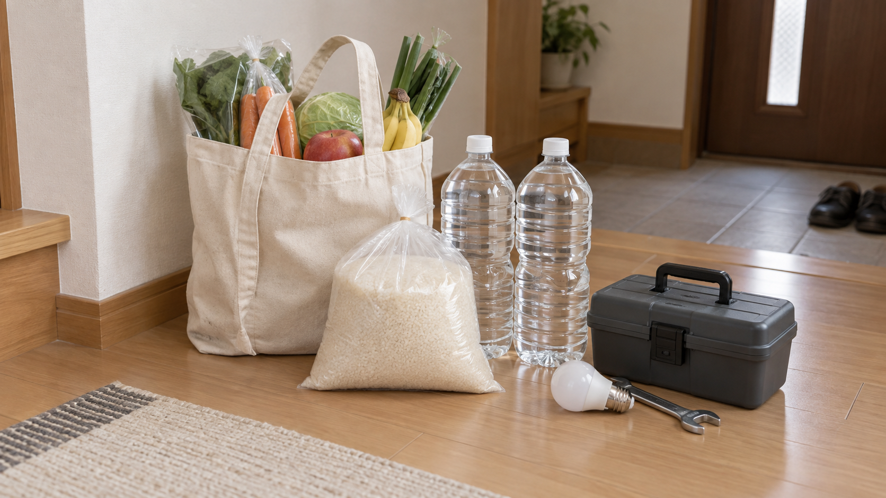

スマホ
LINE、写真、文字サイズ、地域通貨など。
一緒に画面を見ながら、分かるまで確認します。

三鷹市周辺の、身近な相談相手
暮らしの「困った」を、
相談から実際の対応まで。
暮らしの相談員
井口 大成
スマホ、日々の暮らし、親御様や実家のこと。
まずお話を聞き、できることを一緒に進めます。
電話受付 6:00〜24:00
株式会社サンアローズ運営の民間サービス
スマホの使い方も、
一緒にゆっくり確認します。
誰に頼めばいいか迷ったら
LINE、写真、文字サイズ、地域通貨など。
一緒に画面を見ながら、分かるまで確認します。
雑草や庭まわりのお手入れ。
場所や作業量を伺って、対応できる範囲をご案内します。

お米や飲料など、重いもののお買い物の付き添いや、店内・ご自宅での荷物運びのお手伝い、電球交換、障子・網戸のちょっとした補修、自転車の簡単な調整など、暮らしの中の小さな困りごとに対応します。
「こんなことも頼める？」ということでも、まずはお気軽にご相談ください。内容を確認したうえで、対応できる範囲をご案内します。
※自家用車による有償の送迎・配送サービスは行っておりません。

頼み先を探し、相見積もりや作業範囲を確認。
必要なら当日の立会いまでお手伝いします。
排水管のつまりなど、専門対応が必要な場合の相談先探し・手配にも対応します。

親御様の様子や建物の外観、換気・通水・郵便を確認。
写真やメモでご家族へ報告します。

実家の今後や相続前の整理、家族会議。
専門家に相談する前の準備をお手伝いします。

相談から、その先へ
困っていることを伺う
小さな作業やお手伝いは実際に対応
専門業者を探し、必要なら立会い
適切な専門家につなぐ
内容に合わせて対応します。作業内容・料金・実費を事前に確認し、ご納得いただいてから進めます。結果は、ご希望に応じてご家族にも報告します。
ゆっくり、一緒に操作しましょう
LINEや地域通貨など、身近なアプリの使い方をご相談ください。
その他のお手伝い、購入・材料などの実費は、事前にご案内します。
費用は、始める前に確認
三鷹市内は交通費をいただいていません。市外や材料費などの実費は事前にお伝えします。事前に判断できる作業内容・料金・実費は、作業前に書面またはメッセージでご提出します。
地域での活動をご紹介

活動への推薦文をご紹介します。

お弁当と、会話を通じた見守りの取り組みをご紹介します。
家族で話し合う前の基本項目をまとめました。
ご相談の前に
まずは、お聞かせください
暮らしの相談員 井口 大成
株式会社サンアローズ運営の民間サービス